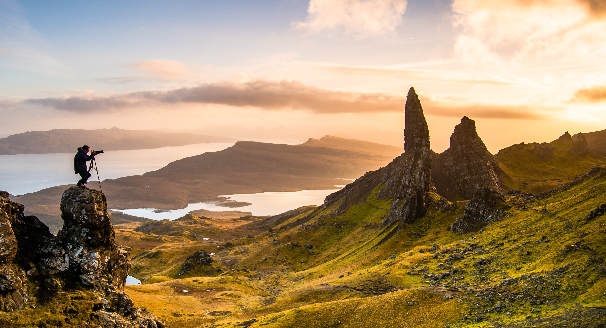

Best Destinations
Seychelles
Seychelles is an archipelago of 140 islands, and most of them are destined to stun you by their natural beauty. The main touristic islands are Mahe, Praslin and La Digue. You can enjoy the beaches and relax or try to do water sports if interested. The seafood is very delicious and the numerous availability of accommodation all over the islands is also very lucrative. A return flight from Amsterdam starts around € 800. You can visit the islands at any time of the year.
More Info
Puglia,Italy
Puglia is a region in the south of Italy and is one of the most diverse regions on the planet. You can enjoy a city life in Bari, or relax across the beaches in Monopoli or Polignano or any small town across the Adriatic coastline, but also check out ancient historical ruins in Matera or visit pretty quaint towns like Ostuni or Lecce. Above all, as it is said, the food in Puglia never disappoints. Return flights to Bari from Amsterdam would cost around € 200. Visit in the months between March to October.
More Info
Andalusia,Spain
Andalusia comprises of the southern region of Spain which includes many beautiful towns and cities like Ronda, Sevilla, Malaga, Granada. Each city has its own unique architecture, other than the beautiful mountains and incredible views. You can also immerse in the culture by participating in a flamenco workshop if you like! Return flights from Amsterdam to Granada (€ 200), Sevilla (&euro 250) or Malaga (€ 150) vary during the year. You can visit anytime of the year other than the extreme hot summer months.
More Info
Masai Mara, Kenya
Famous for being one of the largest wildlife preserves in the world, this national park would definitely amaze you given its ecosystem. Lions, zebras, wildebeests, elephants, hippos, cheetahs, crocodiles are few of the many animals living in a natural habitat that you can expect to view. The Maasai Mara is a must see for every safari lover. Fly to Nairobi airport from Amsterdam (€ 500 return) and take another short 45 min flight or drive to the Mara region.
More Info
Isle of Skye,Scotland

The Isle of Skye is one of the most visited locations in Scotland. It consists of natural landscapes and sceneries that would never cease to amaze! If you fancy being in a cool location away from the hustle and bustle of cities and people, it’s one of the most ideal places to spend your holiday. Cuillin Hills, Dunvegan and Bradford are few of the great mountain ranges including medieval castles where you would love to spend time at. You can fly to Glasgow from Amsterdam (€ 100 return) and use the train or drive to the Skye.
More Info
Istanbul,Turkey
If you are more of a city person, and want to plan a visit to a less popular but equally amazing city, Istanbul should be your first choice. This beautiful capital of Turkey is situated on the border of Europe and Asia and literally has a European and an Asian part, separated by the Bosphorus strait. Immerse yourself in a 2000 year old history with a mix of Eastern Roman and Ottoman architecture and savor mouth-watering Turkish food and delicacies. Flights to Istanbul cost € 250 return from Amsterdam.
More Info